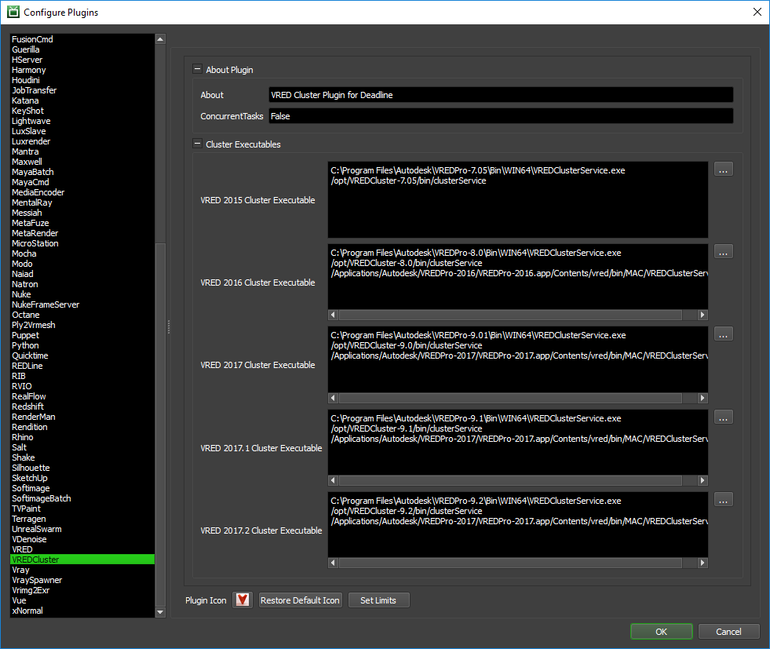

VRED Cluster¶
Note
The current version of Deadline only supports VRED Cluster 2020.0-2024.0 (inclusive). Due to the recency of the VRED Cluster 2024.0 release (at the time of writing), there may be minor bugfixes required in Deadline to ensure reliable support of VRED Cluster 2024.
To run the Linux version of VRED (VREDClusterService executable), please ensure that you run Linux with the appropriate dependencies – including a stable release of the GNU C Library with X-Server installed, per Autodesk’s System Requirement guidelines (referenced below by VRED version):
VRED Cluster Distributed Rendering¶
You can submit jobs for VRED Cluster from the Monitor.
Do NOT execute or install the VRED Cluster service executable as a background service (NT service/daemon). Deadline is more flexible here and will spawn the cluster service executable as a child process of the Deadline Worker. This makes our system more flexible and resilient to crashes as when we terminate the VRED Cluster job in the Deadline queue, the Deadline Worker application will ‘cleanly’ tidy up Cluster Service and more importantly, any child processes.
Submission Options¶
The general Deadline options are explained in the Job Submission documentation.
The VRED Cluster specific options are:
Cluster Count: The number of tasks/maximum number of Workers to create in the cluster. Default: 1
Port Number: The port number to be used for the cluster service. The port number needs to be identical on all machines including the workstation machine for VRED to communicate correctly, and must be open in your firewall. Default: 8889.
VRED Version: The VRED application version to use (12.X=2020.X, 13.X=2021.X, 14.X=2022.X, 15.X=2023.X, 16.X=2024.X). Substitute ‘X’ with VRED’s minor version number.
Plugin Configuration¶
You can configure the VRED Cluster plugin settings from the Monitor. While in power user mode, select Tools -> Configure Plugins and select the VRED plugin from the list on the left.
Note, if the executable supports a MAJOR.MINOR.REVISION (9.0.123) numbering system in its path, then you will need to configure the explicit exe path to the particular revision that you have installed on your machines. Deadline does not track every possible revision available or indeed where it might be custom installed to, so a studio should verify their exe paths are correct for each application version they choose to use with Deadline. Multiple exe paths can still be declared and the first one that is found on a particular Worker on a particular platform will be used from the exe list.
Cluster Executables
Here you can specify the executable used for rendering for the different versions of VRED.
Ensure you use the following VRED executable only:
- VRED Cluster Service
Windows: VREDClusterService.exe
macOS: VREDClusterService
Linux: clusterService
Rendering¶
After you’ve configured and submitted your VRED cluster job it is time to start rendering using your clusters. In VRED, start by enabling raytracing (Only Raytracing renders can be distributed over a cluster), then open up the Cluster Rendering window (Rendering -> Cluster). Set the servers to be the machine names/ip addresses of the machines that picked up the Cluster job, separated by spaces. Set the Port number to be the same as port number specified in the VRED Cluster Job. Modify any other settings you want for your cluster jobs in this UI.

After you have set everything up in the Clusters window, open up the render settings window (Rendering -> Render Settings) and set up your job as if you were rendering normally. Once this is set up enable cluster rendering in the render settings window (Cluster group in the file output tab) and enter the cluster machine names/ip address as you did in the cluster window. Begin your render by pressing the render button in the render settings window.

After you are done all of your renders, complete the VRED cluster job through the Deadline Monitor.
FAQ¶
Can VRED be run as a service?
VRED can sometimes crash when running as a service. If VRED appears crashed, try running the Worker as a normal application instead of as a service to see if that fixes the problem.
Is VRED supported on Linux?
Yes, only the non-gui application ‘clusterService’ is supported on Linux.
Error Messages and Meanings¶
This is a collection of known VRED Cluster error messages and their meanings, as well as possible solutions. We want to keep this list as up to date as possible, so if you run into an error message that isn’t listed here, please visit the Thinkbox Help Centre and let us know.
Error: FailRenderException : VRED cluster service executable was not found in the semicolon separated list.
If you encounter this error message in Job Report, Deadline is unable to find executable path for VRED Cluster application.
Note that this may mean the specific version is not supported by Deadline officially.
However, you can do the following self-troubleshooting method to render using the current VRED cluster version.
You can add current VREDCluster version in the following files: [Repository]submissionVREDpluginsVREDClusterVREDCluster.param [Repository]submissionVREDpluginsVREDClusterVREDCluster.options
STDOUT: vrEGL: couldn’t find ‘libEGL.so’!
If you are using a headless Linux-based Render Node (i.e. no physical graphics card installed), you will need to install a replacement for OpenGL such as MESA to avoid the missing OpenGL libraries message as well as ensure X-server is running as per Autodesk VRED System Requirements guidelines (listed at the top):
>>> sudo -s >>> yum install redhat-lsb libX11 libText mesa-libGL mesa-libGLU >>> yum groupinstall "X Window System"Reboot machine, and ensure run-level is set correctly

{kind=link}
{kind=link}